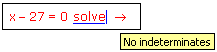

Clearing Previous Definitions of Variables |
When you apply a keyword to an expression that contains a variable with an assigned value, Mathcad first substitutes the variable's value in the expression and then performs the keyword operation. For example,
x := 4
x2− 2x + 4 factor → 22·3
Sometimes, you might want to clear the assigned value of a variable, to make the variable "free." For example, if you have assigned x the value 4 as above, and then try to solve a polynomial in x using the keyword "solve," Mathcad returns an error message:

This happens because Mathcad first replaces x with 4 in the equation. As a result, the equation has no indeterminate - a variable without an assigned value - to solve for.
To clear the symbolic value of x, type
x := x
This resets the symbolic value of x to be just x.
x → x
You can now solve the equation, provided you type it below the line x:= x.
x − 27 = 0 solve → 27
Note that while the symbolic value of x is now x, its numerical value is still 5:
x = 5
As an alternative to typing x:= x, you can use the keyword "explicit" to temporarily suppress the value of x for a single symbolic evaluation. See Suppressing the Value of a Variable for an example.